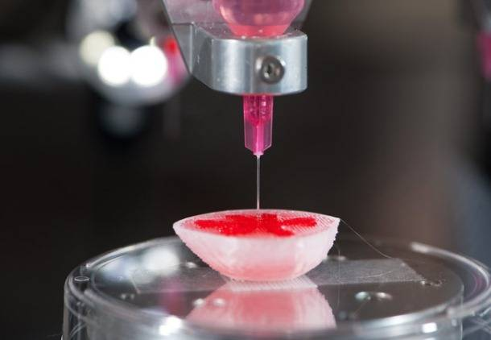

Tecnica para su fabricación
La creación de nuevos organismos vivos es el objetivo final de la biología sintética, que apareció a principios del siglo. Durante estos años, hemos visto a científicos manipular genéticamente bacterias para que degraden polímeros de plástico o incluso fabricar riñones humanos mediante las impresoras 3D.Entre ellos destaca la creación de los llamados organs-on-a-chip, dispositivos que recrean a microescala las funciones de un órgano real y permiten su estudio. También despunta la creación de organoides en cultivos 3D, que llevan a cabo procesos de desarrollo generando una estructura similar a los órganos naturales, teniendo la autoorganización un papel crítico.
